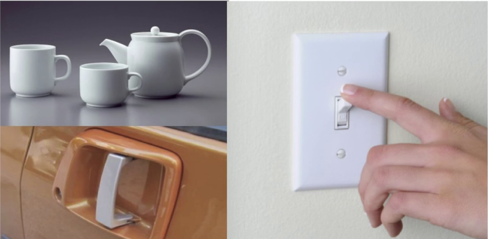

← Voltar para Aulas
### Faculdade Donaduzzi # Desenvolvimento de Interface Gráfica **Aula 2: Diferenciações Fundamentais e Affordance** --- **Prof. Guilherme de Araujo Gabriel** 1º Semestre Note: Boas vindas. Alinhamento inicial.
## UI vs. UX O objetivo deste tópico é corrigir a concepção equivocada de que "fazer o design" é apenas deixar a interface bonita. É necessário estabelecer uma hierarquia clara entre os termos.
## A Hierarquia dos Conceitos <div class="card-box" style="font-size: 0.8em; margin-bottom: 15px;"> <strong>Usabilidade (Fatores Humanos)</strong> É o conceito mais amplo. Refere-se ao estudo de como os seres humanos se relacionam com qualquer produto, seja uma torradeira, uma maçaneta ou um software. </div> <div class="card-box" style="font-size: 0.8em; margin-bottom: 15px;"> <strong>IHC (Interação Humano-Computador)</strong> É um subconjunto da usabilidade que foca especificamente na relação entre humanos e produtos computacionais/sistemas. </div>
## A Hierarquia dos Conceitos <div class="card-box" style="font-size: 0.8em; margin-bottom: 15px;"> <strong>Usabilidade (Fatores Humanos)</strong> É o conceito mais amplo. Refere-se ao estudo de como os seres humanos se relacionam com qualquer produto, seja uma torradeira, uma maçaneta ou um software. </div> <div class="card-box" style="font-size: 0.8em; margin-bottom: 15px;"> <strong>IHC (Interação Humano-Computador)</strong> É um subconjunto da usabilidade que foca especificamente na relação entre humanos e produtos computacionais/sistemas. </div>
### UI (User Interface) Refere-se à **parte visível e tangível** do sistema (botões, menus, cores). Uma boa estética é importante, mas não garante sucesso. ### UX (User Experience) Sintetiza "toda a experiência com um produto". Inclui funcionalidade, se é cativante, agradável e se atende emocionalmente ao usuário. > "A UX é maior do que a soma de suas partes."
### O Exemplo da Bicicleta 🚲 Lowdermilk ilustra com uma bicicleta que tem um design visual arrojado (**boa UI**), mas rodas quadradas (**má UX/Usabilidade**), tornando-a inútil. Um aplicativo pode ser esteticamente perfeito, mas se o fluxo de navegação for confuso, a UX será terrível.
## Metas: Usabilidade vs. UX ### Metas de Usabilidade (Objetivas) Focam na eficácia e eficiência: * É eficaz? * É seguro de usar? * É fácil de aprender (learnability)? * É eficiente (permite alta produtividade)?
### Metas de UX (Subjetivas) Focam em como o usuário se **sente**: * É satisfatório? * É divertido? * É motivador? * É esteticamente agradável? * É emocionalmente adequado?
## O Mito da Subjetividade **DCU não é apenas "arte".** * **Não é apenas design visual:** O foco real é na eficiência. A estética é apenas uma ferramenta. * **Baseado em dados:** O DCU combate "achismos". Utiliza ergonomia, psicologia e antropologia. Decisões devem ser baseadas em dados observáveis e testes, não na preferência pessoal. Note: Decisões de design devem ser baseadas em dados.
### O que é Design de Interação? Segundo Rogers: > "O design de produtos interativos que fornecem suporte às atividades cotidianas das pessoas, seja no lar ou no trabalho." --- #### A Analogia da Arquitetura 🏗️ * **Engenharia de Software** ≈ **Engenharia Civil** (integridade, custo, durabilidade). * **Design de Interação** ≈ **Arquitetura** (como as pessoas viverão e usarão o espaço). Note: Terry Winograd analogia.
## O Conceito de Affordance Refere-se aos atributos de um objeto que permitem às pessoas saber como utilizá-lo. É dar uma **"pista" visual**.  <small style="display: block; color: gray;">Fonte: Perceived Affordance: Understanding the Essence of Design and User Perception (Acessado em 22/02/2026)</small> * **Maçaneta:** Affordance de girar ou puxar. * **Botão do mouse:** Affordance de ser pressionado.
### Affordance em Interfaces **(Virtual vs. Real)** * **Objetos físicos:** Têm affordances reais (uma cadeira suporta sentar). * **Interfaces de tela:** Têm **affordances percebidas**. Como a tela é plana, o designer deve criar a **ilusão** de que um objeto pode ser clicado ou arrastado. Note: Exemplo de erro: botões flat sem relevo (pouca affordance percebida).
### Affordance em Interfaces <img src="./assets/affordance-ui.avif" width="600" style="display: block; margin: 0 auto;"> <small style="display: block; color: gray;">Fonte: What is Affordance in UX Design? (Acessado em 22/02/2026)</small>
### Affordance Falsa O perigo de projetar objetos que parecem fazer algo que não fazem. <img src="./assets/false-affordance.avif" width="600" style="display: block; margin: 0 auto;"> <small style="display: block; color: gray;">Fonte: What are affordances in UX design? (Acessado em 22/02/2026)</small>
### Visibilidade e Feedback <img src="./assets/affordance-signifier.avif" width="600" style="display: block; margin: 0 auto;"> <small style="display: block; color: gray;">Fonte: What are affordances in UX design? (Acessado em 22/02/2026)</small>
## Atividade Prática (TDE) 🕵️♀️ Encontrem, até a próxima aula: 1. Um exemplo de **má affordance em um objeto físico** do dia a dia (ex: porta com puxador que precisa empurrar). 2. Um exemplo em uma **interface digital** (ex: um botão que não parece botão).
## Referências <div style="font-size: 0.5em; text-align: left;"> ### Imagens e Mídias * **[1] Affordance:** Disponível em: [Perceived Affordance: Understanding the Essence of Design and User Perception](https://unmatchedstyle.com/news/perceived-affordance-understanding-the-essence-of-design-and-user-perception.php). Acesso em: 22 Fev. 2026. * **[2] Exemplo Affordance digital:** Disponível em: [What is Affordance in UX Design?](https://www.ramotion.com/blog/affordance-in-ux-design/). Acesso em: 22 Fev. 2026. * **[3] Exemplo Affordance falsa:** Disponível em: [What are affordances in UX design?](https://blog.logrocket.com/ux-design/affordances-ux-design/). Acesso em: 22 Fev. 2026. * **[4] Exemplo Affordance feedback:** Disponível em: [What are affordances in UX design?](https://blog.logrocket.com/ux-design/affordances-ux-design/). Acesso em: 22 Fev. 2026. ### Bibliografia Consultada * **LOWDERMILK, Travis.** *Design centrado no usuário: um guia para o desenvolvimento de aplicativos amigáveis.* São Paulo: Novatec Editora Ltda, 2013. 182 p. * **ROGERS, Yvonne.** *Design de interação: além da interação humano-computador.* 3. ed. Porto Alegre: Bookman, 2013. 585 p. * **SOMMERVILLE, Ian.** *Engenharia de software.* 10. ed. São Paulo: Pearson Education do Brasil, 2018. 756 p. </div> <small>Apresentado por: Guilherme de Araujo Gabriel</small>